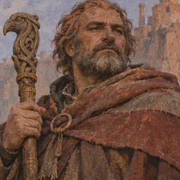

Вечер 1
Удар, которого не было
Добраться до кузницы и впервые проверить, можно ли не исполнить показанный удар.
Открыть сценарий →В пустой глазнице мёртвой звезды снова стучат молоты. Экспедиция должна остановить ковку проклятия, способного обездвижить три приграничных города. Но на металле проступают следы ещё не нанесённых ударов — и один из них похож на ваш. Кузнечица ждёт именно тех, кто придёт уничтожить её работу.

Перед чтением вступления сверьте место героев, присутствующих людей и предметы с итогом прошлого вечера. Если условия встречи отпали, сыграйте последствия там, где находится партия. Событие по расписанию может произойти за кадром. Герои узнают о нём от тех, кто был на месте.
Уточните отдельно, у кого сейчас третья кромка, кто держит сердечник и открыт ли выход. Согласие пропустить кузнечицу меняет только последний пункт. В седьмом вечере игроки вправе уйти, пока остальные два ещё решаются.
Чужую кузницу штурмовать отказываемся. Уводим людей с направления наведения. Составляем список тех, кто покинул отмеченную площадку. Уход видели семьи на нижних ступенях. Вейра продолжает свою ковку: безопасность эвакуированных не уничтожила оружие.
Сопоставим кромку неудачного образца с дужкой крепления; разъединим учебную связку до пробы. Доступные свидетельства — Кромка разрушенного образца, Дужка общего крепления. Удар при соединённой нити выращивает новый зубец. Для остановки кузни надо решить, как удержать концы порознь. Разводим концы пробы и приглашаем второго наблюдателя. Оказалось, что сопротивление при соединённой нити завершает кромку. Предупреждаем Отту до удара; что делать с сердцем, решаем отдельно.
Стражи удержали соединение. Повторный удар в том же положении сыграл бы на руку Вейре. Оставляем молот и встречаем людей вне линии наведения. Оставляем молот и уводим людей из линии наведения. В последней записи оружие осталось в кузнице, а нижние ступени опустели.
8 сессий по 3 часа: 15 минут открытия или пересказа, три сцены по 45 минут, перерыв 15 минут, закрытие 15 минут. Подготовленные герои — уровень 3. Прочитайте первую сессию, выберите состав и передайте игрокам отдельную страницу героев.
В мастерской создайте или откройте свой черновик, выберите импорт пакета и укажите package.json либо нужный файл из variants. Проверьте сценарий и состав в предпросмотре; активацию подтверждает ведущий. Сюжетные развилки, часы давления и жанровые действия разрешаются ведущим — они не становятся автоматически сыгранными событиями.
Пакеты разных размеров используют первые N героев в порядке карточек. Дополнительные герои дают новые роли, но не обязательные ключи к истории. Выбор произвольного состава требует правки черновика и повторной проверки.
Холодный звёздный ужас, вещественные загадки, опасное проникновение и деятельные противники. Странность проверяема; отвага не гарантирует правоту, однако решения действительно меняют исход.
Добраться до кузницы и впервые проверить, можно ли не исполнить показанный удар.
Открыть сценарий →На малом безопасном образце установить, какие действия питают печать и как разорвать её условие.
Открыть сценарий →Получить независимое свидетельство и превратить знание о нити в доступный маршрут вмешательства.
Открыть сценарий →Раскрыть замысел через действия противника и лишить Вейру запасного человека для завершающего удара.
Открыть сценарий →Найти скрытое место для подготовки, проверить настоящий выход и испытать перенаправление на пустой чаше.
Открыть сценарий →Занять нужные позиции, узнать отдельные стадии выноса оружия и выбрать место вмешательства до завершающего удара.
Открыть сценарий →Осуществить выбранное вмешательство и пережить ответ Вейры, сохранив возможность частичного успеха.
Открыть сценарий →Вывести экспедицию, завершить обращение с реально оставшимся оружием и дать каждому герою собственный итог.
Открыть сценарий →
Высокая женщина в гладком фартуке, с чёрными кольцами на рукояти молота.
Кузнечица открыто признаёт, что готовит оружие против пограничных военачальников. Утверждает, что незавершённое сердце можно разбить.
Получить настоящего противника у соединённого сердечника, завершить кромку и вынести оружие для вторжения.
Она специально оставила путь к заготовке удобнее пути к нити. Угроза городам реальна, но изображение неизбежного спасительного удара она подделала.
Не знает планов героев, их тайных намерений и будущего. Реагирует только на увиденное, донесение или сказанное при ней.
Открыто предложит ударить сердце при первой встрече. Признаёт смысл третьей кромки, если герои показывают результат опыта, но не сообщает расположение запасного противника добровольно.

Медный знак экспедиции, седая прядь и тщательно починенный походный плащ.
Организатор перехода просит остановить ковку и вернуть участников.
Сохранить людей и добыть достаточно вещественных доказательств для пограничных командиров.
Он обещал начальству привезти одну целую форму; теперь понимает, что это может противоречить безопасности. Скрывает обещание, а не союз с Вейрой.
Не знает принципа третьей кромки, положения Ивена и способов перенаправления.
Покажет поручение и собственное обещание, если его прямо спросят о необходимой добыче или предложат рискованный перенос формы; согласится на доказательство без трофея.

Седая женщина с рабочими очками; тень её левой перчатки короче правой.
Бывшая помощница пережила неудачный малый опыт и теперь ухаживает за оставшимися рабочими.
Вывести работников и убедиться, что её ошибку не повторят с большой заготовкой.
Она попыталась уничтожить опытный образец, пока нить была цела, и сама завершила его кромку. Стыд мешает ей начать рассказ, но она готова показать след.
Не знает, кого Вейра приготовила на замену героям, и не видела устройство большой чаши.
Если ей дают спокойно закончить показ или осматривают её образец, рассказывает о попытке уничтожения без проверки. При недоверии предлагает повторить опыт на глине.

Пыльная куртка, связка глиняных колец и тряпица на ремне.
Работница ищет путь в лагерь и предлагает показать обход галереи.
Вернуться с оставшимися товарищами, не оказавшись снова на работе у Вейры.
Она уже снимала нить с дужки: внутренний свет погас, но проход не рухнул. Вернула соединение, услышав приближение надсмотрщика.
Не знает, зачем печати нужен противник, и считает полуденный луч лишь военной угрозой.
Покажет дужку и маршрут за обещание не бросать отставших; при отказе оставит на виду свою схему, чтобы другой отряд мог вывести людей.

Худой человек с измерительной тростью и медленной осторожной походкой.
Носильщик форм знает расположение рабочих площадок и цену каждой дороги.
Получить плату припасами и уйти до последнего удара.
Он доставлял две завершённые кромки и одну пустую; слышал приказ Вейры не позволять своим людям бить третью заготовку.
Не видел условных оттисков и не знает, как погасить уже выкованное оружие.
Повторяет услышанное при разговоре о безопасности переноса; герои могут получить тот же вывод, наблюдая при нём тренировку охраны, без его доверия.

Короткая копейная рукоять, тусклый нагрудник и белая лента на локте.
Старший страж требует не трогать металлические полосы моста.
Выполнить оплаченный приказ, не погибнуть и не дать своим подчинённым стать расходным материалом.
Он получил отдельный приказ пропускать вооружённых противников к сердечнику, но задерживать тех, кто ищет нить. Причину не знает.
Не знает теории печати и не может распознать искреннее намерение героя.
Покажет бирку приказа за безопасный отход или при вопросе, почему запрещён осмотр нити. Если разбит в бою, бирка остаётся среди снаряжения.

Зелёный шарф поверх дорожной брони, две белые отметки на фонаре.
Разведчица экспедиции ищет обход к центральной наковальне.
Вернуть товарищей с полезными сведениями и получить обещанную долю.
Она видела, как Вейра дала пленнику инструкцию и попросила объяснить порядок удара. Сива сама отступила, не решившись войти в охраняемый двор.
Не знает, почему удар Ивена нужен Вейре; не может предсказать, кому он поверит. Инструкция ложна, но Сиве известна только наблюдавшаяся передача и разговор, а не скрытый принцип ковки.
Рассказывает увиденное при возвращении разведгруппы или передаёт нарисованную дорожную метку, если сама не может идти.

Широкоплечий смотритель с резным посохом и глиняной пылью в волосах.
Содержит в рабочем состоянии ручной ворот и выводит работников через порог.
Не допустить захлопывания прохода, пока люди находятся внутри.
Во время прежнего опыта он держал пустую чашу открытой и видел, как проклятие осталось внутри собственного клейма. Он скрыл чашу за воротом.
Не знает устройства печати против господина и не гарантирует исход большого опыта без проверки соединения.
Покажет чашу при просьбе о безопасном грузе или после помощи у ворота. При угрозе уйдёт, оставив чашу и нанесённые на неё отметки открытыми для осмотра.

Изношенная дорожная рубаха, обмотанная тканью ладонь, прямая осанка.
Пленный доброволец из одного из городов ищет возможность сорвать ковку.
Остановить оружие и выбраться; не желает, чтобы его спасали ценой нового удара по дому.
Он спрятал обломок молота и уверен, что сердечник надо разбить при целой нити. Он доверяет полученной инструкции и считает этот план способом остановить оружие.
Не знает, что его сопротивление может завершить кромку, и ничего не знает о будущем как о факте.
Показывает инструкцию, если его выпускают или предлагают сверить способ удара. Понятный опыт либо сравнение приказов заставляет его пересмотреть план без проверки убеждения.
Каменные уступы и замкнутые залы висят вокруг чёрной глазницы звезды. Между ними тянутся ступени, цепи и полосы тусклого воздуха.
Навесы экспедиции стоят на узкой террасе. Ящики привязаны к скале, на столе лежит обломок молота, а над лестницей колышутся серые флаги.
Мост из матовых плит идёт между пустыми формами огромных ладоней. В его решётке блестят тонкие металлические полосы.
Две низкие чаши стоят под закрытым каменным веком. Рядом лежат щипцы, бруски глины и шесть пустых песочных горлышек.
Сухой колодец окружён галереей лежанок. Свет каждого фонаря заканчивается на стене ровной полосой, словно его обрезали ножницами.
Серебристая нить толщиной с палец проходит через каменные дужки. По обе стороны идут узкие дорожки с местами для отдыха.
Под открытым сводом расставлены переносные формы, защитные экраны и стойки для длинных инструментов. Пол усыпан чёрной стружкой.
Уступ скрыт от всех внутренних огней выпуклой стеной. Здесь удобно разложить груз, но проход наружу виден лишь с самого края.
Чёрный диск стоит ребром в раздвоенной наковальне. На полу отражаются чужие созвездия, а наверху неподвижно висит рабочий молот.
Длинный спуск пересекает сухую шахту с глиняными стенами. Узкая пешеходная тропа уходит к нижним ступеням лестницы.
Две створки ворот не касаются друг друга. Между ними стоят пустые носилки, ручной ворот и каменная чаша размером с походный стол.
Условия: Герои добираются до нити, физически размыкают её и только после этого разрушают либо обезвреживают сердечник; Вейра не успевает восстановить соединение.
Третья кромка не возникает. Проклятие не выковано; зафиксированные ранее оттиски остаются свидетельствами отвергнутой возможности.
Цена: Крепление короткой лестницы гаснет. Заранее подготовленный путь спасает время; без него группа проходит Безлучный зев пешком и оставляет тяжёлую добычу. Соррен теряет желанный образец.
Условия: Группа направляет нить в пустую чашу без живой тени внутри и удерживает эту связь до добровольного удара; проверка малого образца уже показала ограничение.
Чёрное солнце формуется и немедленно запирает только собственное клеймо. Его нельзя вынести или навести, пока чаша цела.
Цена: Плавятся все внесённые в чашу трофеи и закрываются внутренние переходы. Герои выходят через оставленный вручную проход; уничтожить кузницу целиком нельзя обещать.
Условия: Герои отказываются ударить сердечник, выводят Ивена и выносят заготовку в глиняной оболочке; лишают Вейру возможности вернуть её в действующую пару чаш.
Ковка не завершается. Заготовку можно погрести в Безлучном зеве после безопасного перехода; города избегают удара.
Цена: Перенос медленный, Вейра сохраняет часть знаний и может скрыться. Сохранить заготовку как трофей означает сознательно оставить угрозу на будущее, а не получить безопасную награду.
Условия: Вейра получает третью кромку, удерживает сердечник и выходит из кузницы; герои не прерывают ни одну из этих отдельных стадий.
У врага появляется готовое оружие. Наведение ещё можно пресечь в последней сцене или последующей кампании; если DM и игроки доведут его до удара, последствия касаются выбранных городов, без автоматического поражения мира.
Цена: Победа экспедиции не состоялась. Выведенные люди, сорванные метки наведения и добытые ограничения оружия определяют, кому удалось избежать проклятия.
Авторская подготовка и техническая проверка не заменяют живую игру. Длительность, сложность и эмоциональное восприятие пока не проверены группой. Картину первой встречи можно открыть отдельно. Тактические схемы построены из данных встреч. Полный каталог содержит материалы ведущего — публиковать его целиком для игроков нельзя.